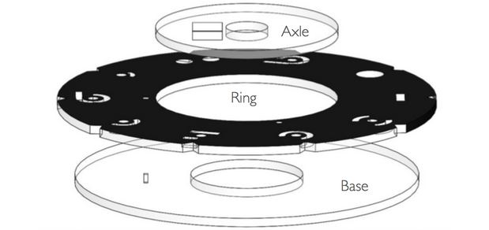

Evaluation
Cost
The total cost of prototyping the time selection device for the 5-Wits Time Travel experience we designed was about $335. A large portion of this cost can be attributed to high expedited shipping costs. Excluding these shipping costs, we spent a total of $230, $90 on electronics and $135 on structural materials. However, we only ended up using a small portion of the electronics and about 75% of the acrylic ordered. In other words, the cost of the prototype itself was about $155.
If this design is implemented by 5-Wits, the material cost of the time selection device will be even less. The electronics and acrylic can be bought in bulk which would reduce costs significantly. In addition, material costs can be further reduced by modifying the design so that all four base and axle sets (depicted in the image below) can be one thermoformed part. This design change would include four additional parts to hold the ring in place. However, even with these additional parts, the material costs will be greatly reduced by the design change.

Challenges
We had several challenges during the construction of the time selection device concept. The major challenges we faced are listed below.
-
Electronic component and wiring was not robust. We needed an enclosure for the electronic components so that they are not damaged.
-
Though the electronics of the time selection device will not be exposed when the device is implemented, they should still be robust to reduce the risk of failure.
-
The distances between the hall effect sensors and magnets were greater than expected.
-
Due to a series of design changes, which included adding spacers between the base and axle to reduce friction and changing the orientation of the rings to improve aesthetics, a large gap between the sensors and magnets was created. The magnets were originally expected to be directly on top of the sensors. The increased distance meant the system had a higher failure rate.
-
The geometry of device components was such that the light from LEDs was not diffused through the symbols adequately.
-
This meant that the user feedback function was greatly limited.
-
The prototype was not structurally robust.
-
Though the acrylic was sturdy and relatively robust for the purpose of the device. However, we had used epoxy as the main adhesive for mounting the acrylic parts to one another. This did not make for a robust structure. In fact, the part can be relatively easily separated.
-
There was more friction between the rings and the other components of the device than was ideal.
-
The presence of this friction made for a rotating motion that was not as smooth as we would have liked. It also lead to scratching on the bottom of the rings which could lead to further problems in the rotation of the rings.
Future Improvements
-
Combine all four base and axle sets into one thermoformed part to improve manufacturability and robustness of structure, as well as reduce material costs.
-
Use RFID sensors instead of hall effect sensors to identify the active symbol in order to increase the versatility of the puzzle.
Incorporate an encasing for the electronics to increase robustness.
Use variable color LEDs to make the puzzle easily resettable.
Use a dedicated microcontroller instead of an Arduino microcontroller to reduce material costs.
|